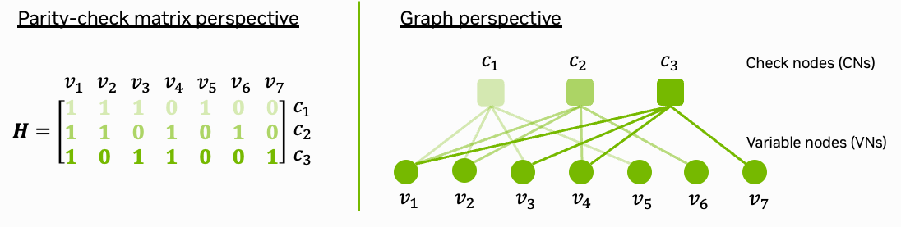
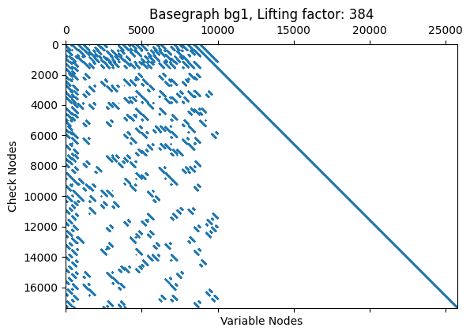

Background Low-density Parity-check Codes#
We start with a Python version of the 5G NR LDPC decoder architecture, which is then used as blueprint for the later CUDA implementation. If you are already familiar with the concept of belief propagation (BP) decoding, you can skip this part of the tutorial.

Fig. 1: Parity-check matrix and decoding graph of the (7,4) Hamming code.
Background: Channel Coding in 5G#
In 5G NR, there are two major channel coding schemes: Low-density Parity-check (LDPC) and Polar codes. LDPC codes are used for the data channels while Polar codes are used for the control channels. This tutorial focuses only on the LDPC decoder as this is one of the most compute-intensive components in the 5G stack.
LDPC codes have been invented in 1963 by Robert G. Gallager but were long forgotten due to their high decoding complexity. After their rediscovery by MacKay in 1996, they have become the workhorse of many modern communication standards, including 5G NR.
The core idea of LDPC decoding is an iterative algorithm based on belief propagation. These iterations can be easily parallelized as each processing node is independent of the others, making them an ideal candidate for GPU acceleration. For further details on LDPC codes in OAI, we refer to [Romani2020].
A machine learning enhanced version of the LDPC decoder has been proposed in [Nachmani2016] and is available as Sionna Tutorial on Weighted Belief Propagation Decoding.
Overview Decoder Implementation#

Fig. 2: Overview of the LDPC BP decoding algorithm.
An overview of the LDPC BP decoding algorithm is shown in Fig. 2 above. The core decoding algorithm is implemented in the update_cn_kernel(.) and update_vn_kernel(.) functions. Both kernels are iteratively executed and perform the check node (CN) and variable node (VN) updates, respectively. The decoder stops when the maximum number of iterations is reached. An additional early stopping condition could also be applied to reduce the average number of iterations.
pack_bits_kernel(.) maps the soft-values to hard-decided bits and packs them into a more compact byte-representation which is required for the OAI processing pipeline.
Note that the decoder is implemented using int datatypes instead of float. This ensures compatibility with OAI.
The Python code of this tutorial can be also found in plugins/ldpc_cuda/src/python/numpy_decoder.py
Python Imports#
Let us now import the relevant libraries. We use the LDPC5GEncoder from Sionna to simplify the code construction. Sionna is not required to run the final CUDA decoder.
[ ]:
# Import the required libraries
import os # Configure which GPU
if os.getenv("CUDA_VISIBLE_DEVICES") is None:
gpu_num = 0 # Use "" to use the CPU
os.environ["CUDA_VISIBLE_DEVICES"] = f"{gpu_num}"
import numpy as np
import torch
import matplotlib.pyplot as plt
# Import Sionna LDPCEncoder LDPC code definitions
from sionna.phy.fec.ldpc import LDPC5GEncoder, LDPC5GDecoder
Basegraph selection#
In 5G NR, the LDPC code is defined by two basegraphs (bg) each with 8 different realizations (selected by the lifting set index ils) depending on the code length and rate. The basegraph selection must be done during each decoding execution as the code parameters can dynamically change.
The LDPC code construction itself is a quasi-cyclic (QC) LDPC code with lifting factor \(Z\) which takes values between 2,…,384. For details see [Richardson2018].
[2]:
def get_bg(ils, bg, verbose=False):
"""Pre-generates basegraph description for the given lifting set index and basegraph number.
This can be precomputed and stored before the decoding process.
Parameters
----------
ils : int | 0,...,7
lifting set index of bg as defined in 38.212 Tab 5.3.2-1.
bg : int | 1,2
Basegraph number
verbose : bool
If True, additional information is printed
Returns
-------
bg_vn : list of tuples
Each tuple contains the variable node index, the check node index, the cyclic shift and the offset for the memory access of the message.
bg_cn : list of tuples
Each tuple contains the check node index, the variable node index, the cyclic shift and the offset for the memory access of the message.
bg_vn_degree : list
List of variable node degrees.
bg_cn_degree : list
List of check node degrees.
"""
if bg==1:
bg = "bg1"
else:
bg = "bg2"
# Use sionna to load the basegraph
enc = LDPC5GEncoder(12, 24) # dummy encoder
mat_ref = enc._load_basegraph(ils, bg)
#########################################################
# Generate bg compact description
#########################################################
# From VN perspective
bg_vn = []
msg_offset = 0 # Counter how many messages blocks have been passed already
for idx_vn in range(mat_ref.shape[1]):
t = []
for idx_cn in range(mat_ref.shape[0]):
if mat_ref[idx_cn, idx_vn] != -1:
t.append((idx_vn, idx_cn, int(mat_ref[idx_cn, idx_vn]),
msg_offset))
msg_offset += 1
bg_vn.append(t)
if verbose:
print(bg_vn)
# From CN perspective
bg_cn = []
for idx_cn in range(mat_ref.shape[0]):
t = []
for idx_vn in range(mat_ref.shape[1]):
if mat_ref[idx_cn, idx_vn] != -1:
# Find message offset from VN perspective
# Find matching entry in bg_vn to get message offset
for vn_entry in bg_vn[idx_vn]:
if vn_entry[1] == idx_cn:
msg_offset = vn_entry[3]
break
t.append((idx_cn, idx_vn, int(mat_ref[idx_cn, idx_vn]),
msg_offset))
bg_cn.append(t)
if verbose:
print(bg_cn)
bg_vn_degree = [len(bg_vn[i]) for i in range(len(bg_vn))]
bg_cn_degree = [len(bg_cn[i]) for i in range(len(bg_cn))]
if verbose:
print(bg_vn_degree)
print(bg_cn_degree)
return bg_vn, bg_cn, bg_vn_degree, bg_cn_degree
This can be be precomputed for \(bg=1\) and \(bg=2\) and for all possible values of \(ils=0,...,7\) leading to 14 different code definitions. For the sake of readability of this Python implementation, we re-run the above function during each call of the decoding function.
Before decoding, the decoder needs to load the exact code configuration for the given basegraph \(bg\) and lifting factor \(z\).
[3]:
def init_basegraph(bg, z):
"""Initializes the basegraph, its dimensions and number of edges/messages.
Parameters
----------
bg : int | 1,2
Basegraph number
z : int | 2,...,384
Lifting factor
Returns
-------
bg_vn : list of tuples
Each tuple contains the variable node index, the check node index, the cyclic shift and the offset for the memory access of the message.
bg_cn : list of tuples
Each tuple contains the check node index, the variable node index, the cyclic shift and the offset for the memory access of the message.
bg_vn_degree : list
List of variable node degrees.
bg_cn_degree : list
List of check node degrees.
num_cols : int
Number of variable nodes.
num_rows : int
Number of check nodes.
num_edges : int
Number of edges/messages in the graph.
"""
# These values are hard-coded for the basegraphs bg1 and bg2
# They are defined the 38.212.
if bg == 1:
num_rows = 46
num_cols = 68
num_nnz = 316 # Num non-zero elements in bg
else: # bg2
num_rows = 42
num_cols = 52
num_nnz = 197 # Num non-zero elements in bg
# Number of variable nodes
num_vns = num_cols * z
# Number of check nodes
num_cns = num_rows * z
# Number of edges/messages in the graph
num_edges = num_nnz * z
# Lifting set according to 38.212 Tab 5.3.2-1
s_val = [[2, 4, 8, 16, 32, 64, 128, 256],
[3, 6, 12, 24, 48, 96, 192, 384],
[5, 10, 20, 40, 80, 160, 320],
[7, 14, 28, 56, 112, 224],
[9, 18, 36, 72, 144, 288],
[11, 22, 44, 88, 176, 352],
[13, 26, 52, 104, 208],
[15, 30, 60, 120, 240]]
# Find lifting set index
ils = -1
for i in range(len(s_val)):
for j in range(len(s_val[i])):
if z == s_val[i][j]:
ils = i
break
# This case should not happen
assert ils != -1, "Lifting factor not found in lifting set"
# Load base graph; this will become a lookup table in CUDA
bg_vn, bg_cn, bg_vn_degree, bg_cn_degree = get_bg(ils, bg)
return bg_vn, bg_cn, bg_vn_degree, bg_cn_degree, num_cols, num_rows, num_edges
Memory Layout#
The resulting parity-check matrix after lifting can be visualized using the code below. Each blue dot represents a connection from a check node to a variable node and, thus, an outgoing message from a check node to a variable node which needs to be stored in the message buffer.
[4]:
# Example code construction
k = 8448
n = 368*68
enc = LDPC5GEncoder(k, n)
dec = LDPC5GDecoder(enc)
plt.spy(dec.pcm, markersize=0.3);
plt.xlabel('Variable Nodes');
plt.ylabel('Check Nodes');
plt.title(f'Basegraph {enc._bg}, Lifting factor: {enc.z}');
plt.show();

During decoding, it requires to update three different message buffers:
llr_channel: This buffer stores the LLRs from the channel. This is of size \(Z*68\) for \(bg=1\) and \(Z*52\) for \(bg=2\).
llr_total : This buffer accumulates the LLRs from the variable nodes. This is of size \(Z*68\) for \(bg=1\) and \(Z*52\) for \(bg=2\).
llr_msg: This buffer stores the messages from the check nodes to the variable nodes. This is of size \(Z*316\) for \(bg=1\) and \(Z*197\) for \(bg=2\).
In practice, many VNs are punctured due to rate-matching, allowing decoders to skip updates for these unused nodes and operate more efficiently.
CN Update Function#
We are using the min-sum approximation for the check node update, given as
where \(y_{j \to i}\) denotes the message from check node (CN) \(j\) to variable node (VN) \(i\) and \(x_{i \to j}\) from VN \(i\) to CN \(j\), respectively. Further, \(\mathcal{N}(j)\) denotes all indices of connected VNs to CN \(j\) and
is the sign of the outgoing message. The parameter \(\beta\) defines the damping factor which is used to scale the outgoing CN messages. For further details we refer to [Chen2005].
[5]:
# In the later CUDA implementation, we use int8 dtypes for the LLRs.
# Thus, we need to clip the LLRs to the range [-127, 127]
MAX_LLR_VALUE = 127 # depends on dtype
# Damping(=scaling) factor of the outgoing LLRs to improve the decoding performance.
# This is a heuristic value and typically a good choice.
DAMPING_FACTOR = 0.75
def update_cn(llr_msg, llr_total, z, bg_cn, bg_cn_degree, num_rows, first_iter):
"""
Inputs
------
llr_msg: np.array [num_edges]
Incoming LLRs from variable nodes
llr_total: np.array [num_vns]
Accumulated LLRs from variable nodes
z: int | 2,...,384
Lifting factor
bg_cn: list of tuples
Check node configuration
bg_cn_degree: list
Check node degree
num_rows: int
Number of rows in the base graph
first_iter: bool
Whether this is the first iteration
Returns
-------
llr_msg: np.array [num_edges]
Updated LLRs from check nodes
"""
# Check node update function
# These two loops can be parallelized in CUDA
for i in range(z): # between 2 and 384
for idx_row in range(num_rows): # Either 46 or 42
cn_degree = bg_cn_degree[idx_row] # Check node degree
# List of tuples (idx_row, idx_col, s, msg_offset)
cn = bg_cn[idx_row] # len(cn) = cn_degree
# Search the "extrinsic" min of all incoming LLRs
# This means we need to find the min and the second min of all incoming LLRs
min_1 = MAX_LLR_VALUE
min_2 = MAX_LLR_VALUE
idx_min = -1
node_sign = 1
# Temp buffer for signs
msg_sign = np.ones((19,)) # Max CN degree is 19
for ii in range(cn_degree):
# Calculate the index of the message in the LLR array
msg_offset = cn[ii][3]
s = cn[ii][2]
idx_col = cn[ii][1]
msg_idx = msg_offset * z + i
# Total VN message
t = llr_total[idx_col*z + (i+s)%z]
# Make extrinsic by subtracting the previous msg
if not first_iter: # Ignore in first iteration
t -= llr_msg[msg_idx]
# Store sign for 2nd recursion
sign = 1 if np.abs(t) == 0 else np.sign(t)
# Could be also used for syndrome-based check or early termination
node_sign *= sign
msg_sign[ii] = sign # For later sign calculation
# Find min and second min
t_abs = np.abs(t)
if t_abs < min_1:
min_2 = min_1
min_1 = t_abs
idx_min = msg_idx
elif t_abs < min_2:
min_2 = t_abs
# Apply damping factor
min_1 *= DAMPING_FACTOR
min_2 *= DAMPING_FACTOR
# Clip min_val to MAX_LLR_VALUE
min_1 = np.clip(min_1, -MAX_LLR_VALUE, MAX_LLR_VALUE)
min_2 = np.clip(min_2, -MAX_LLR_VALUE, MAX_LLR_VALUE)
# Apply min and second min to the outgoing LLR
for ii in range(cn_degree):
msg_offset = cn[ii][3]
msg_idx = msg_offset * z + i
if msg_idx == idx_min:
min_val = min_2
else:
min_val = min_1
# And update outgoing msg including sign
llr_msg[msg_idx] = min_val * node_sign * msg_sign[ii]
return llr_msg
VN Update Function#
The variable node update function sums all incoming messages from the check nodes and adds the channel LLRs
where \(\lambda_i\) denotes the channel LLR associated to the \(i\)-th VN and \(\mathcal{M}(i) \setminus j\) denotes the set of check nodes connected to VN \(i\) excluding the check node \(j\) itself.
[6]:
def update_vn(llr_msg, llr_ch, llr_total, z, bg_vn, bg_vn_degree, num_cols):
"""
Inputs
------
llr_msg: np.array [num_edges]
Incoming LLRs from check nodes
llr_ch: np.array [num_vns]
Channel LLRs
llr_total: np.array [num_vns]
Accumulated LLRs from variable nodes
z: int | 2,...,384
Lifting factor
bg_vn: list of tuples
Variable node configuration
bg_vn_degree: list
Variable node degree
num_cols: int
Number of variable nodes
Returns
-------
llr_total: np.array [num_vns]
Updated LLRs from variable nodes
"""
# This can be parallelized in CUDA
for i in range(z): # Between 2 and 384
for idx_col in range(num_cols): # Either 52 or 68
vn_degree = bg_vn_degree[idx_col] # Variable node degree
# List of tuples (idx_col, idx_row, s, msg_offset)
vn = bg_vn[idx_col] # len(vn) = vn_degree
# Accumulate all incoming LLRs
msg_sum = 0 # Should be int16
for j in range(vn_degree):
msg_offset = vn[j][3]
s = vn[j][2]
# Index of the msg in the LLR array
# It is the idx_col-th variable node, and the j-th message from the idx_row-th check node
msg_idx = msg_offset * z + (i-s)%z
# Accumulate all incoming LLRs
msg_sum += llr_msg[msg_idx].astype(np.int16)
# Add the channel LLRs
msg_sum += llr_ch[idx_col*z + i].astype(np.int16)
llr_total[idx_col*z + i] = msg_sum
return llr_total
Hard-decision#
The final LLRs can now be hard-decided to bits. Further, OAI requires to return bytes instead of bit values.
[7]:
def pack_bits(llr_total, block_length, pack_bits=False):
"""
Inputs
------
llr_total: np.array [num_vns]
LLRs from variable nodes
block_length: int
Number of payload bits that are returned after decoding
pack_bits: bool
If True, the bits are packed into a byte array
Returns
-------
bits: np.array [block_length]
Decoded bits
"""
# OAI wants the bits in a byte array
if pack_bits:
# Round length to the nearest multiple of 8
block_length = int(np.ceil(block_length/8)*8)
bits = (llr_total[:block_length]<0).astype(np.uint8)
bits = np.packbits(bits)
else:
bits = (llr_total[:block_length]<0).astype(np.uint8)
return bits
Main Decoding Function#
We can now run the full LDPC decoder by iteratively updating VN and CN update functions as depicted in Fig. 2.
[8]:
def decode_ldpc(bg, z, block_length, num_iter, llr_ch):
"""
Inputs
------
bg: int | 1,2
Basegraph used for decoding
z: int | 2,...,384
Lifting factor
block_length: int
Number of payload bits that are returned after decoding
num_iter: int
Max number of decoding iterations
llr_ch: np.array [68+z] or [52*z] for bg1 and bg2, respectively
Received channel LLRs
"""
############################
# Initialize Variables
############################
bg_vn, bg_cn, bg_vn_degree, bg_cn_degree, num_cols, num_rows, num_edges = init_basegraph(bg, z)
# Temporary message buffer
# Max size is 316*384
llr_msg = np.zeros((num_edges,), dtype=np.int8) # No need to initialize to 0
# VN accumulator
# We always init the max size of the LLR array given as 68*384
# The accumulator needs higher precision than the message buffer
llr_ch = llr_ch.astype(np.int8)
############################
# Main Decoding Loop
############################
llr_total = np.copy(llr_ch).astype(np.int16) # llr_total will be updated in the VN update
for i in range(num_iter):
# CN update
# llr_msg not read, only written to in first iteration; will be filled with outputs of this function
llr_msg = update_cn(llr_msg, llr_total, z, bg_cn, bg_cn_degree, num_rows, i==0)
# VN update
llr_total = update_vn(llr_msg, llr_ch, llr_total, z, bg_vn, bg_vn_degree, num_cols)
# Pack bits
bits = pack_bits(llr_total, block_length, pack_bits=True)
# [optional] apply syndrome check and if not successful return `num_iter+=1``
return bits, llr_total
Run and Test the Decoder#
We can now run an end-to-end test of the decoder using the Sionna LDPC5GEncoder. Note that de-rate matching at the receiver must be done manually before decoding. This will be handled by the OAI stack in the future.
[9]:
# Parameters
k = 1280 # Payload size
n = 2560 # Codeword size after rate matching
num_iter = 8 # Number of decoding iterations
llr_mag = 10 # LLR magnitude
# Use Sionna for BG selection
enc = LDPC5GEncoder(k, n)
bg = 1 if enc._bg == "bg1" else 2
z = enc.z
# Draw random bits
u = np.random.randint(0,2,k)
# Encode using Sionna
c = enc(torch.tensor(u, dtype=torch.float32).unsqueeze(0))[0].detach().cpu().numpy()
# Map to LLRs
x = 1-2*c
# Clip to max LLR value due to int8 representation
llr_ch = np.clip((llr_mag * x),-127,127).astype(np.int8)
# Get code parameters
num_vn = 68*z if bg == 1 else 52*z
parity_start = 22*z if bg == 1 else 10*z
# Apply rate matching
llr_input = np.zeros(num_vn,dtype=np.int8) # Takes care of the punctured bits (initialized to 0 LLR)
llr_input[2*z:k] = llr_ch[:k-2*z] # Unpunctured message bits
llr_input[k:parity_start] = 127 # Shortened bits
llr_input[parity_start:parity_start+n-k+2*z] = llr_ch[k-2*z:] # parity bits
# Run decoder
decoder_outputs,_ = decode_ldpc(bg, z, k, num_iter, llr_input)
# Evaluate results
u_hat = np.unpackbits(decoder_outputs.astype(np.uint8))[:k] # There may be a couple of extra bits if k is not a multiple of 8
if np.all(u == u_hat):
print("All payload bits decoded correctly!")
else:
print("Decoding failed!")
print(f"Shape of LLR input: {llr_input.shape}")
print(f"Shape of decoded bytes: {decoder_outputs.shape}")
All payload bits decoded correctly!
Shape of LLR input: (6656,)
Shape of decoded bytes: (160,)
We are now ready to start with the CUDA implementation!